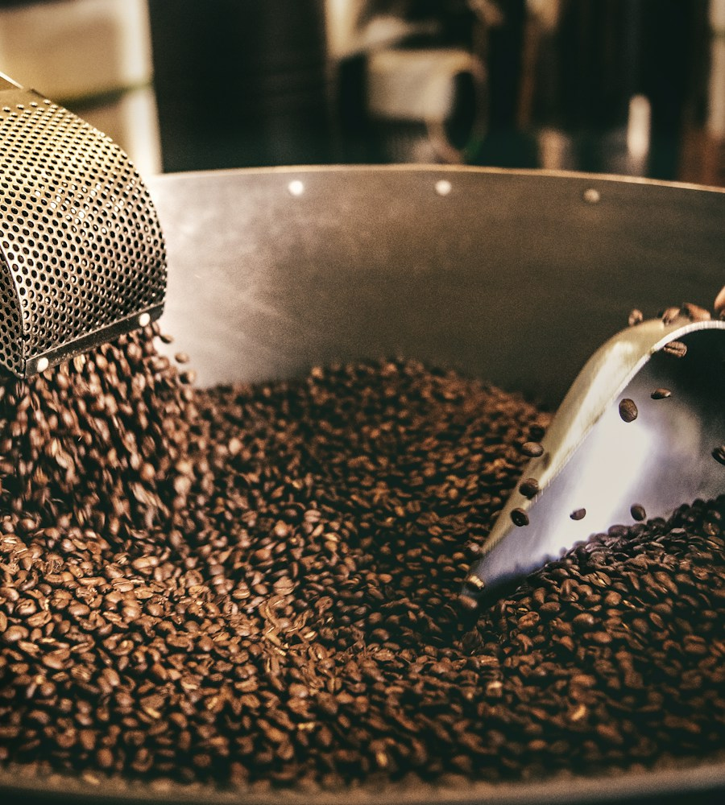
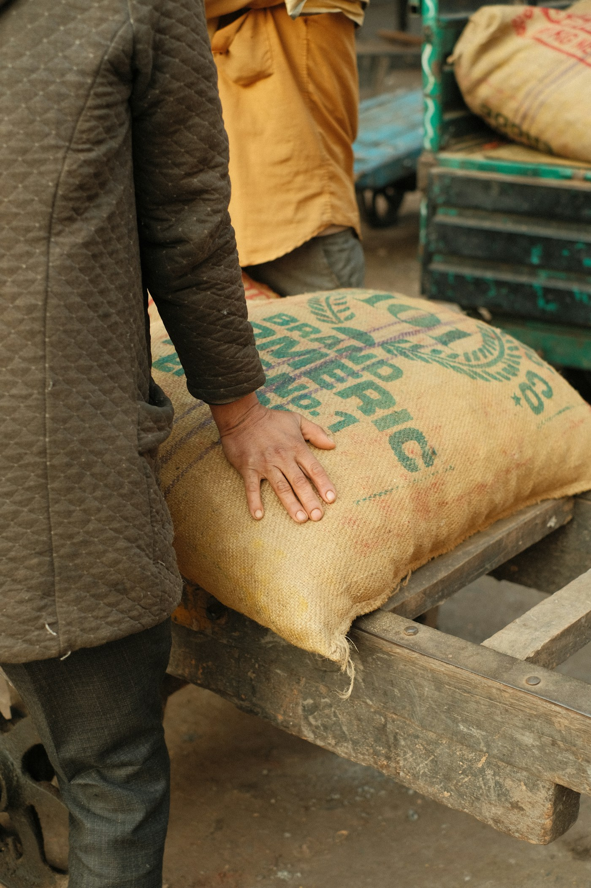
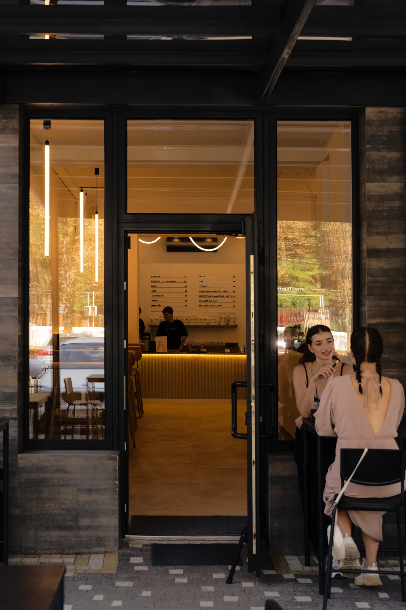
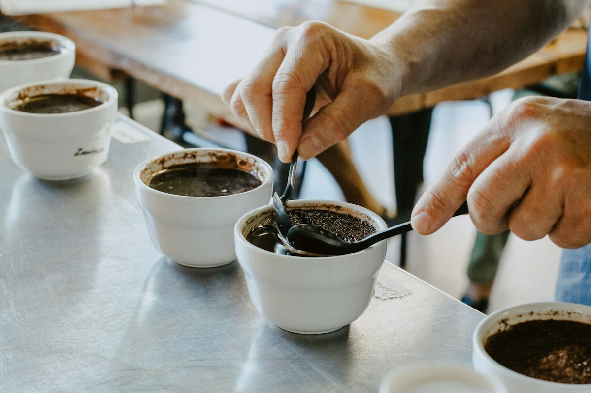
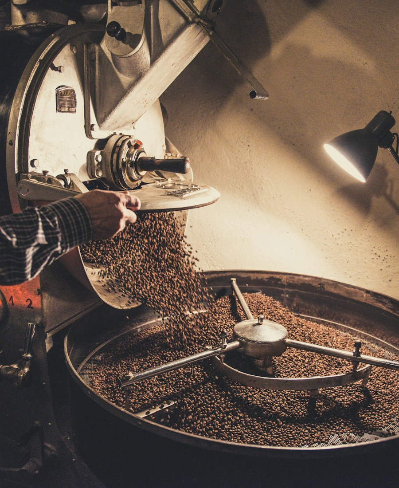
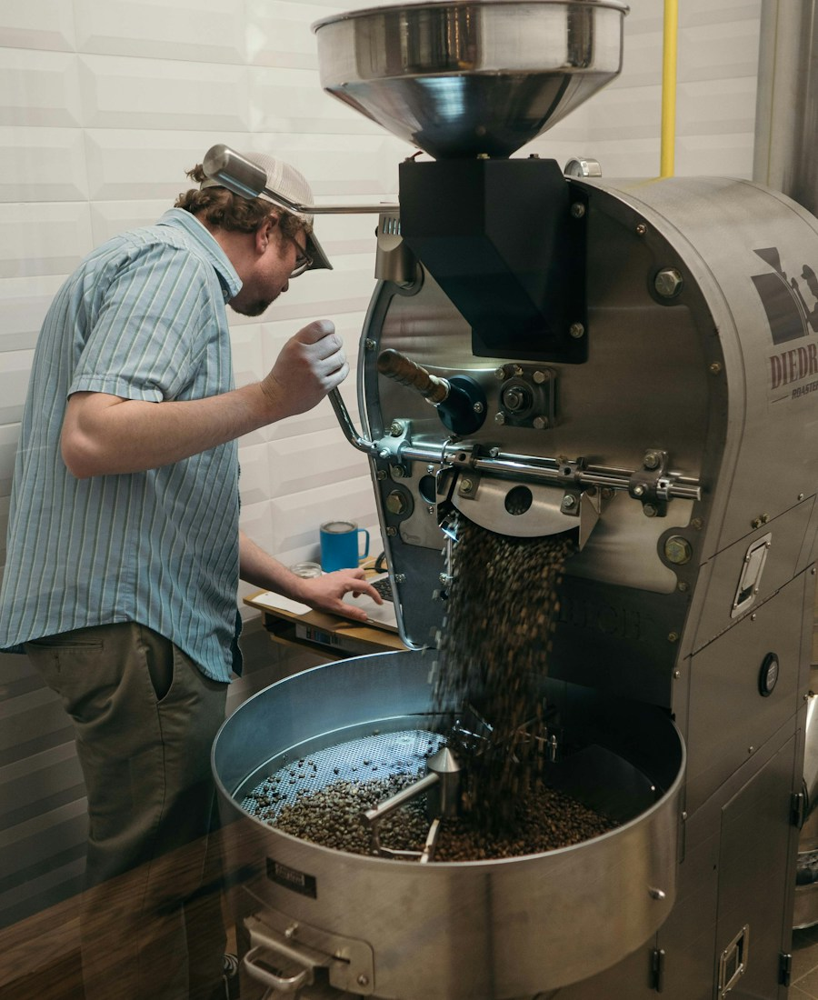
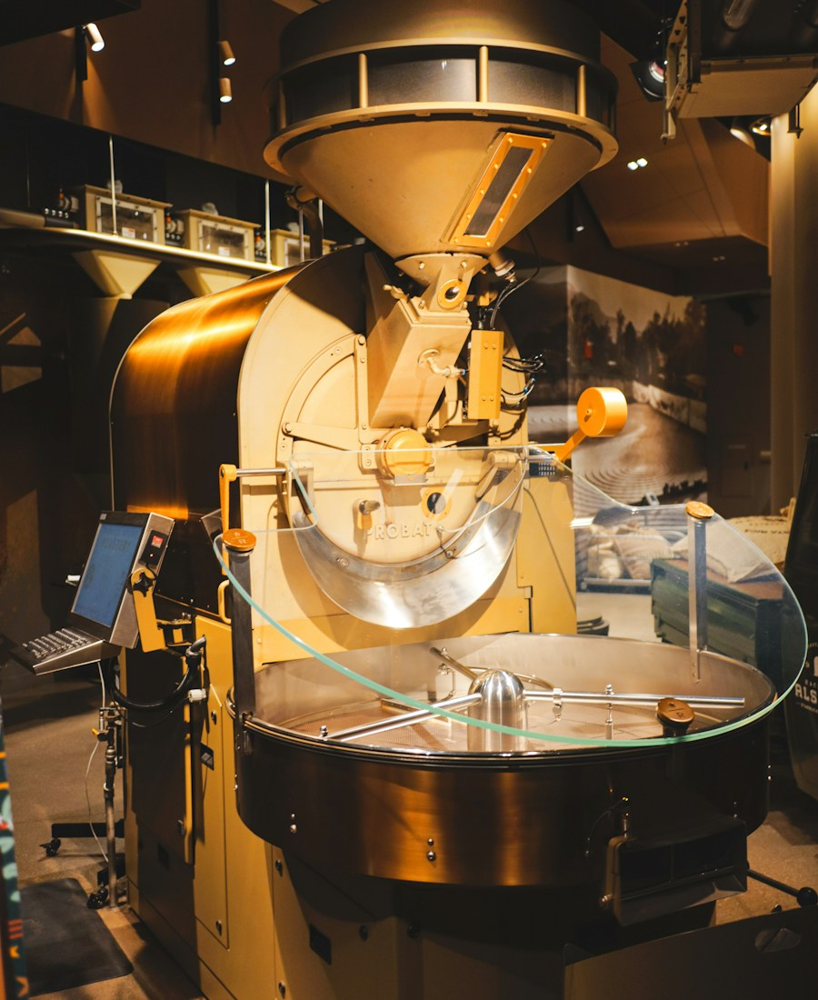
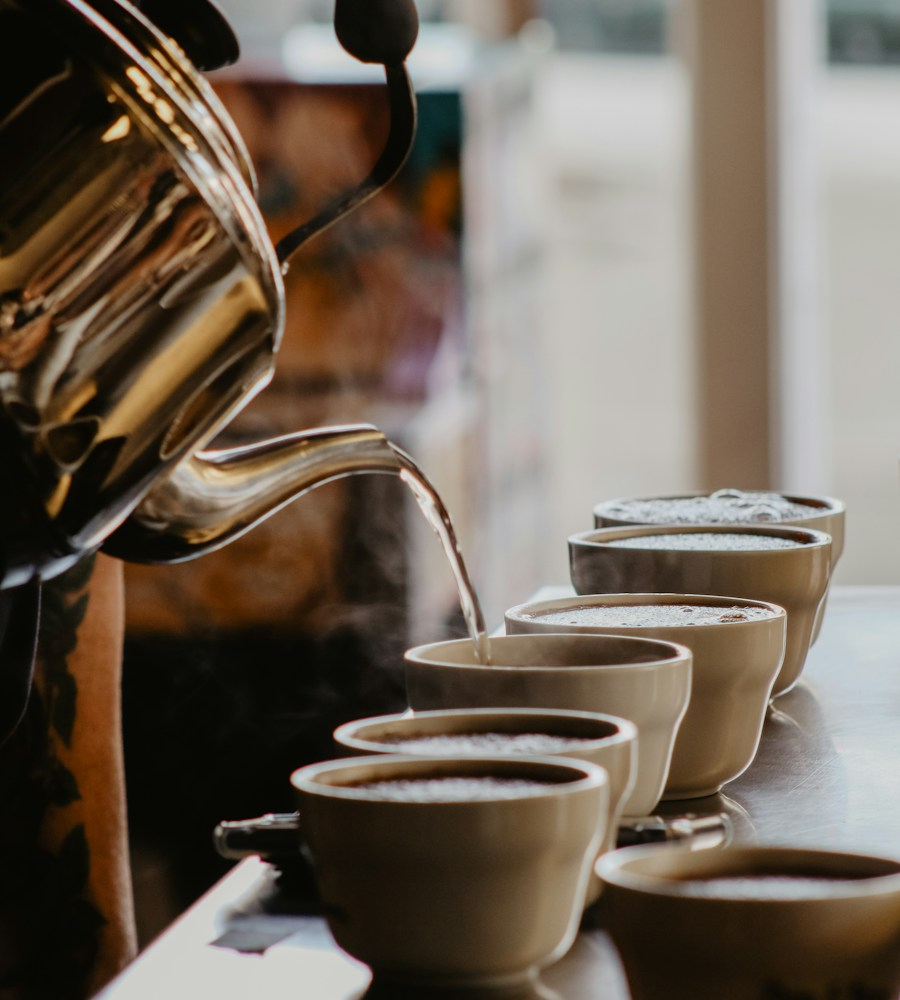
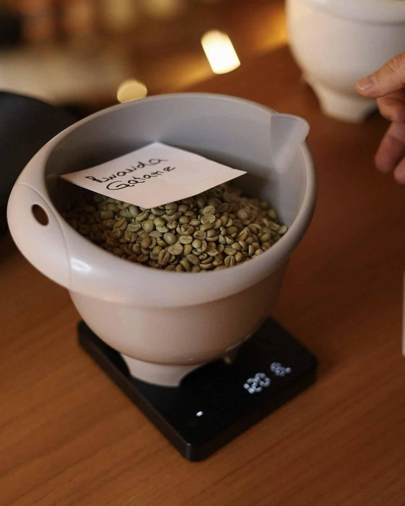
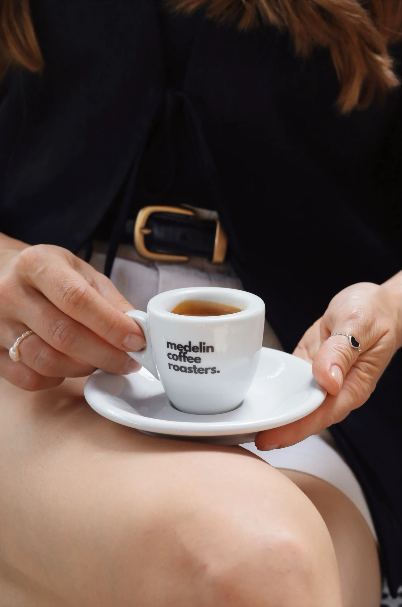

з 1998
Наш обсмажувальник працює в Medelin від самого заснування компанії.
Ужгород · 1998
Ми почали з виробництва обсмаженої кави та ростера легендарної німецької компанії Probat. Зелене зерно купували у швейцарського імпортера, який працював із кавовими регіонами всього світу.
Гортайте вниз далі історію веде крива обсмаження, від зеленого зерна до чашкиСушіння · зелене зерно
Багато сортів, з яких починалася історія Medelin, представлені й досі. Майже через три десятиліття вони, як і раніше, мають своїх відданих прихильників.

В Індії каву часто вирощують у тіні дерев, поруч зі спеціями: перцем і кардамоном.
AA — найбільший розмір зерна в кенійській класифікації. Кенійську каву люблять за яскравість.
Різновид арабіки з одним із найбільших зерен у світі. Його називають «слоновим» зерном.
Strictly High Grown: каву вирощують високо в горах, тому зерно дозріває повільніше й стає щільнішим.
Зерно тижнями витримують під вологими мусонними вітрами. Воно світлішає, збільшується й втрачає кислотність.
Ноти смаку типові для походження, а не опис конкретного лоту. Подивитися сорти в каталозі
Перші два роки
Перші два роки стали для нас чудовим уроком. Ми пропонували свою каву ресторанам і кафе, але постійно чули одне й те саме:
«Medelin ніхто не знає»
«Покупець хоче відомі імпортні марки»
У якийсь момент ми втомилися переконувати тих, хто вирішував за покупця.
І вирішили: нехай обирає сам покупець.
Реакція Маяра · експеримент
Ми орендували приміщення площею всього 20 квадратних метрів і відкрили власну магазин-кав'ярню.
На одній полиці розмістили практично всю доступну тоді імпортну каву, від недорогої до найвідоміших італійських брендів. На іншій — лише каву Medelin.
А поруч встановили кавомашину, щоб будь-який сорт можна було спочатку скуштувати й лише потім вирішити, купувати його чи ні.
Як думаєте, яка полиця спорожніла швидше за перший місяць?
Оберіть полицю або просто гортайте далі.
Імпортної кави ми продали близько 30 кілограмів. Кави Medelin — 900. У тридцять разів більше.

Незабаром відкрили другу локацію, потім третю. Черги сягали дверей і практично не зникали протягом усього дня. Поступово Medelin став частиною кавової культури Ужгорода, а згодом з'явився і в інших містах Закарпаття.
Розвиток · смак
Тут каву п'ють багато, люблять давно й чудово знають, якою хочуть її бачити. Покупці говорили нам, коли кава здавалася надто гіркою, надто кислою або коли у смаку чогось бракувало. Ми слухали, змінювали профілі й знову обсмажували.
Що сказав покупець?
Скорочуємо розвиток після першого креку й трохи знижуємо кінцеву температуру: гіркота йде, солодкість лишається.
Спрощена схема. Справжній профіль залежить від зерна, партії й ростера.

Так поступово сформувався власний стиль Medelin і головна ідея: нам важливо створити чашку кави, від якої людина отримує задоволення.
Specialty coffee
У 2022 році для Medelin розпочався новий етап — specialty coffee. Ми заново вчилися, експериментували, обсмажували, куштували й знову обсмажували. Нове покоління обладнання дозволило контролювати процес з точністю, про яку наприкінці дев'яностих можна було лише мріяти.

Ростер Probat, з якого Medelin почався у 1998 році.

Наступний крок у точності й стабільності обсмаження.

Десятки параметрів під контролем і точне повторення профілю для specialty-лотів.
Сьогодні на виробництві Medelin зустрічаються вже три покоління ростерів Probat.
Технологія повторює. Людина вирішує.
Сучасні технології допомагають контролювати десятки параметрів і точно відтворювати створений профіль, але головний інструмент, як і раніше, не комп'ютер. Це смак. Технологія здатна бездоганно відтворити задумане людиною, але спочатку саме людина має зрозуміти, якою має бути ця кава.
Команда Medelin

з 1998
Наш обсмажувальник працює в Medelin від самого заснування компанії.

15–20+ років
Основний склад нашої команди працює разом уже 15–20 років і більше.

мікролоти
Найрідкісніші specialty-мікролоти сьогодні особисто обсмажує засновник Medelin Фелікс Бірман.
Ми обираємо цікаве зелене зерно, шукаємо для кожного лота власний профіль і продовжуємо робити те саме, що робили багато років тому:
Тільки обладнання стало точнішим, можливості — значно ширшими, а вимоги до себе — вищими.

Нам подобається кава
Подобаються техніка, технології, експерименти й сам процес створення чогось нового. Але все це має дуже просту мету: людина має зробити перший ковток і подумати: «Вау». Потім повернутися, зробити ще один — і знову відчути те саме.
Колись над нашим виставковим стендом висіла фраза:
Не скуштуєш — не дізнаєшся
Минуло майже тридцять років, змінилися технології, обладнання й сам кавовий світ. А нам досі важко придумати точніший опис Medelin.